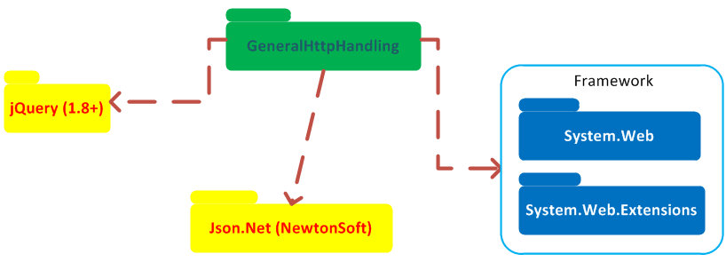
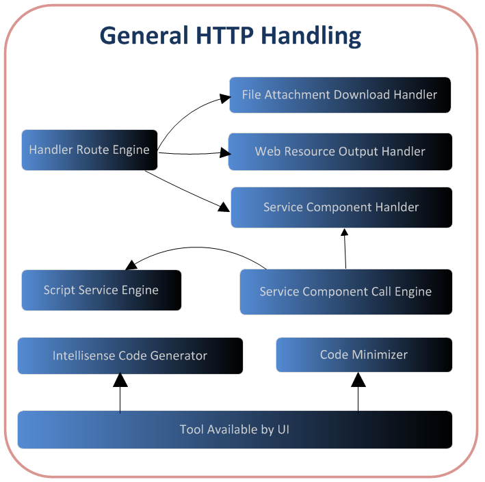
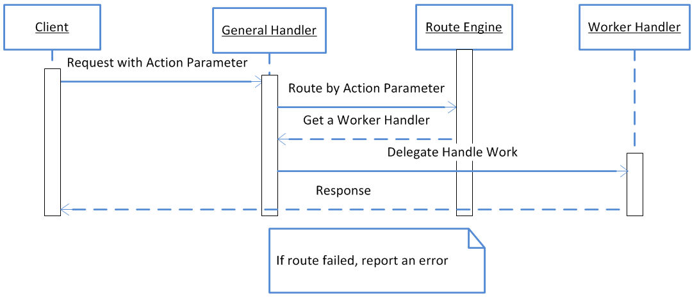
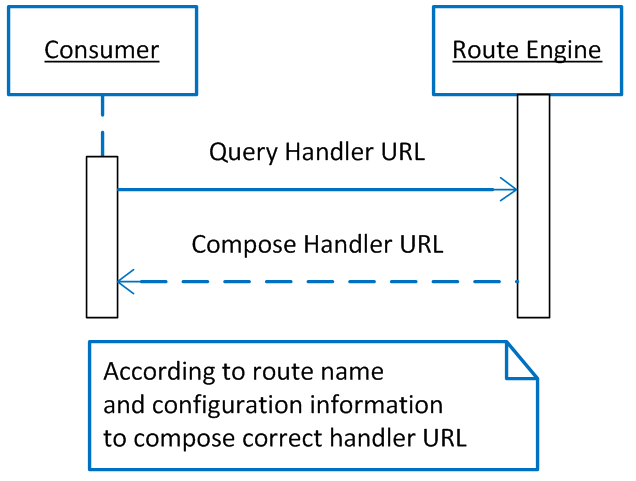

Now our system has many HTTP handlers to process multiple different requests. We can provide only one HTTP handler to process any type of requests by provide routing method. And when we want to call server method, we use different user defined protocol to design handler. So we need develop an engine to call the server method directly (all details (such as data serialization/deserialization, client asynchronous invoking & callbacks etc.) should be encapsulated).
There should be routing method to process different requests.
Frequent used client components should be reused easily. It can be combine to new apply by an easy method.
This should be straightforward from client and server.
Should provide a tool to generate the code to reference for intellisense.
By configurable method to minimize the code.
All functions should be encapsulated into on package - GeneralHttpHandling. Its dependencies is as below:

Main sub-packages and their dependencies:

The flow is as below:

The flow is as below:
